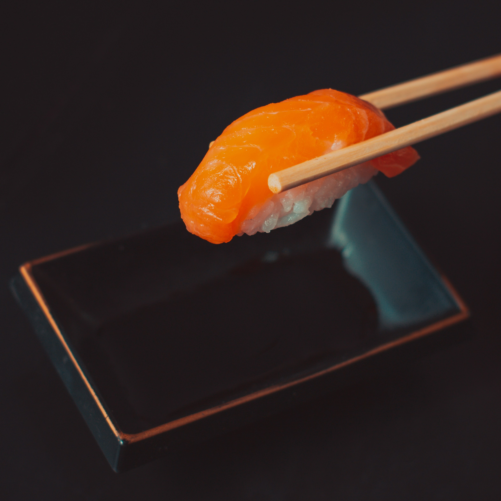
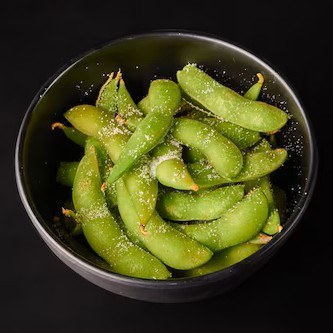
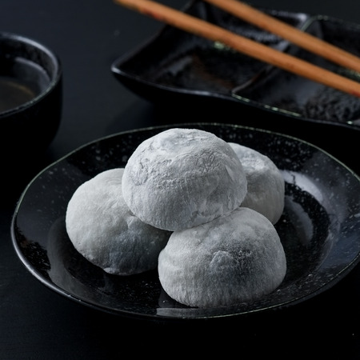
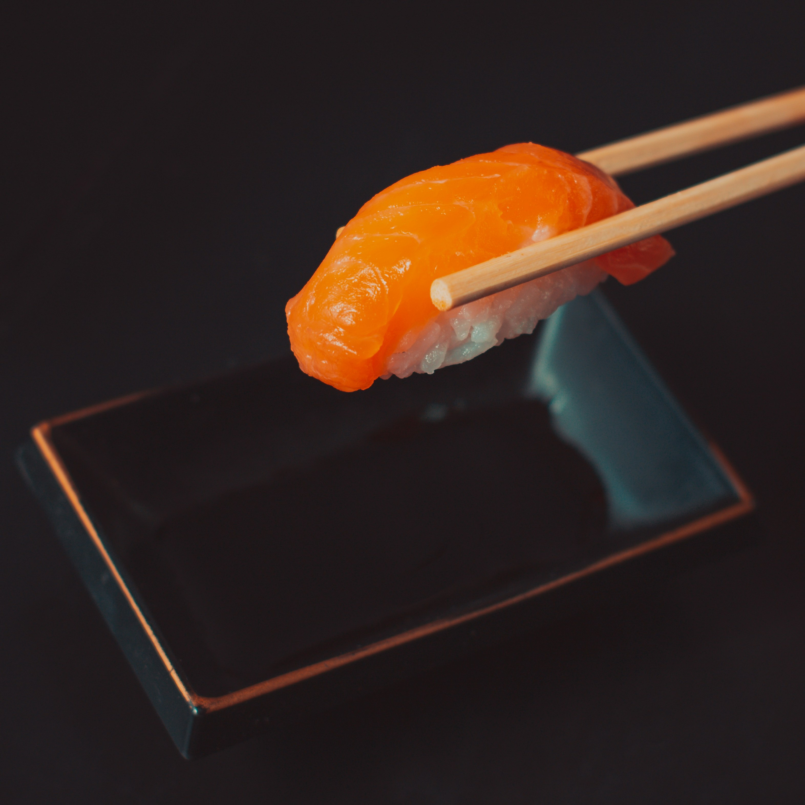
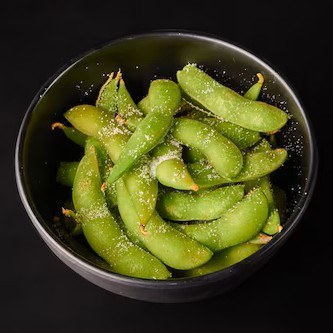
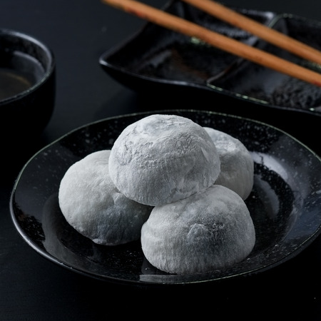

Nos adresses

Sushi Lover Boulingrin
17 Allée des Soupirs
31400 Toulouse

Sushi Lover Soupetard
79 Avenue de la Gloire
31500 Toulouse

Sushi Lover Rangueil
68 route de Narbonne
31400 Toulouse
Commandez maintenant !
Click & CollectNotre savoir-faire
Depuis près de dix ans, nous avons à cœur de partager avec vous l’art du sushi et les saveurs authentiques de l’Asie de l’Est. Chaque recette est pensée avec soin, puis perfectionnée au fil du temps pour s’adapter à vos envies et à vos goûts. Installés en plein cœur de Toulouse, nous revisitons chaque année nos créations pour les sublimer et vous surprendre toujours davantage. Notre plus belle récompense : vous voir savourer nos plats avec autant de plaisir que nous en avons à les préparer.
Retrouvez-nous sur les réseaux sociaux
 






Contactez-nous
Vous souhaitez nous poser une question, nous faire un feedback, ou tout simplement nous contacter ?
Écrivez-nous à sushi@lover.fr ou appelez nous au 01 42 00 00 00